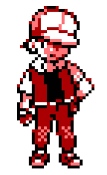

"¿Que pasaria si el red de pokemon fuera de Montería?"

si el mitico entrenador pokemon existiera en una realidad ambientada en la perla del sinu se veria altamente influenciado por la cultura de la region por lo que en lugar de su clasica gorra, en su lugar el entrenador llevaria un sombrero vueltiao de 21 vueltas tintado de rojo.
en esta hipotetica realidad tambien tendriamos respuesta a la alta temperatura de la zona, la cual seria que evidentemente el ave legendaria Moltres sobrevolaria con frecuencia la region teniendo su hogar en la region de Montelibano conocida por ser una de las mas calientes de la region